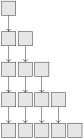
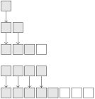

One of the simplest data structures are lists. Lists represent an ordered collection of several elements in which, unlike a set, an element can appear multiple times. Typical operations of lists are:
Get length
Append element
Remove element
Get/set element at position
Lists can have different implementations. These implementations differ in how the list is represented (the data structure itself) and partly also in the run time complexity of the list operations.
Subsection5.1.1Array Lists
A very straightforward list implementation uses plain arrays. The idea is to put all elements in a list into an array. In addition to storing the elements in an array, we also need to memorize the length of the array because C arrays are just containers holding multiple elements and we cannot inquire a container for its size.
One decision that we have to make is how we handle resizing the array when elements are appended or removed. One way to handle this is to always match the length of the array with the length of the list. Then, for each append and each remove, the array has to be resized. As we discussed before, containers (remember an array is just a container) cannot change their size. To get a bigger container, we need to allocate a new one and copy the data there. So matching the array size to the length of the list would have the overhead of reallocating the array each time and worse, copying all elements in the list over to the new array. Especially when adding a large number of elements to a list (a very common operation), reallocation/copying would have to occur each time when a new element is added.
A more pragmatic way that is very common in practice is to double the size of the array as soon as it is full and to not change the container when an element is removed. This has the drawback that we often reserve more memory than we actually need (the container has more space than we need for the list) at the benefit of less frequent reallocations. Before considering the implementation of the list operations in detail, let us first theoretically investigate the number of element copies that this policy incurs. It is a simple example of what is called amortized runtime analysis.
Let us call the length of the array the capacity of the array list. So, assume that initially the array has capacity 1 and the list is empty, i.e. has length 0. (One could start with a higher capacity to optimize away some of the initial reallocations, but let us ignore that for the sake of simplicity.) Since we double the size of the array only when we want to add an element and the capacity equals the list size, the capacity will always be a power of two. Assume we are in this situation and the capacity (and the list length) is \(2^n\text{.}\) If we now add one more element to the array list, we will allocate a new array of size \(2^{n+1}\) and copy all \(2^n\) elements over to the new array. So, in general, if the array capacity equals \(2^m\text{,}\) we have copied \(2^0+2^1+\cdots+2^{m-1}=2^{m}-1\) elements. However, if the capacity is \(2^m\text{,}\) the array list contains at least \(2^{m-1}+1\) elements. So in total (amortized over all insertions) after inserting \(2^{m-1}\lt M\le 2^m\) elements to the array list, we have performed at most \(2M\) copy operations.
(a)Extending the array by one element upon appending leads to a quadratic amount of copy operations.
(b)Doubling the capacity of the array leads to an amortized constant count of copy operations per element.
Figure5.1.1.Evolution of array after appending five elements. Each row shows array after re-allocation. Arrows indicate copying of cells.
This analysis is amortized because it does not considers the complexity of a single append to the list, which can be expensive because we might copy the entire array, but a sequence of insertions over which the run time is amortized.
Basic Data Structure and Initialization.
An array list consists of an array holding the list elements, represented by a pointer holding the address of the array container. Here, we will focus on integer elements and we discuss below (Genericity) how this can be generalized to arbitrary data types. Additionally, we need to memorize the current length of the list and the capacity of the array.
struct array_list_t {
int* data; // payload
int size; // number of elements in list
int capacity; // size of array;
};
typedef struct array_list_t array_list_t;
Programmers can just declare variables of the above type. However, to function properly, they have to be initialized: The array has to be allocated and size and capacity have to be properly set. This is achieved by the following function. It takes a pointer to an (uninitialized) array list and an initial capacity and initializes the data structure accordingly.
You might ask yourself if it would be easier if array_list_new also allocated the memory for the array_list_t itself instead of requiring the user to give a pointer to it. This is pretty common in C programs because it gives the user more flexibility on where to allocate the memory for the variable. If array_list_new also allocated memory, it would have to use malloc which may not be what the user wants. Maybe they wanted a local or global variable instead.
Of course there also needs to be function that disposes all the allocated memory of an array list. Since this is just the array containing the list elements, this is a simple free. Note that it is still a good idea to provide a function for this because it relieves and prevents the programmer from studying the internals of the array_list_t data structure and encapsulates its inner working.
For a useful list implementation we also want functions to query the list size and get the element at the i-th position. These functions are very easy to implement and could be carried out by the user directly on the data structure. However, to ensure encapsulation, we provide functions nonetheless.
int array_list_size(const array_list_t* l) {
return l->size;
}
void* array_list_get(const array_list_t *l, int idx) {
return idx < l->size ? l->data[idx] : NULL;
}
int array_list_find(array_list_t* l, int element) {
for (int i = 0; i < l->size; i++) {
if (l->data[i] == element) {
return i;
}
}
return array_list_size(l);
}
Appending implements the resizing of the array when the capacity is exhausted as discussed above. To this end, it uses the C standard library function realloc which takes a pointer to an existing container and a size in bytes and gives us back a pointer to a new container that has the given size and copies as much of the old data as will fit into the new container.
Removing an element from a list involves copying “down” all subsequent elements with the element immediately following the one to be removed overwriting it. This is implemented by a simple for-loop. Note, that it is vital that the function also checks that the index is in bounds. Otherwise, undefined behavior (see Section 4.15) may occur when idx is out of bounds.
int array_list_remove(array_list_t* l, int idx) {
if (idx >= array_list_size(l))
return 0;
for (int j = idx; j+1 < l->size; j++) {
l->data[j] = l->data[j + 1];
}
--l->size;
return 1;
}
So far, our list elements were ints. However, one typically does not only want lists of ints but lists holding elements of an arbitrary type. We also say that the list (or the data structure in general) shall be generic. This means that the type of the elements is not known beforehand but the data structure is parametric in that data type, meaning that the data structure can be instantiated for arbitrary element types.
Genericity cannot be achieved very elegantly in C because C's type system does not provide a mechanism where types can be parameters to another type declaration like the declaration of the array_list_t struct. The standard way of attaining genericity in C is by using void pointers. By substituting int element by void* element, we indicate that the list element resides somewhere else in memory (not directly inside the array that holds the list). This makes the array list work with arbitrary element types.
However, the type system of C is too weak to provide helpful guarantees. Other programming languages like C++, Java, ML, and many others provide some sort of parametricity where the programmer can indicate that the list is actually a list of elements of some type \(T\text{.}\) Such type systems then ensure that the programmer can only add elements of type \(T\) to the list and, in turn guarantees that everything that is taken out of the list is also of type \(T\text{.}\) From a type system perspective, when using void pointers, we are essentially forgetting everything about the type so it is up to the programmer to cast the void pointer into appropriate element pointers.
Summary and Complexity Analysis.
Array lists are very frequently used in practice. The amortized complexity of appending an element is constant as argued above. However, some append operations may take as many operations as there are elements in the list. Getting the i-th element can be done in a single operation by virtue of address arithmetic: We just index the array at index i. Removing and finding an element costs \(n\) copy operations in the worst case.
In terms of memory, array lists allocate twice as much memory as needed in the worst case.
Very important in practice is that the list elements lie contiguously in memory. Various hardware mechanisms (fetching cache lines, prefetching) are optimized for contiguously accessing arrays which makes array lists very fast in practice.
ExercisesExercises
1.
Modify the
struct array_list_t {
int* data; // payload
int size; // number of elements in list
int capacity; // size of array;
};
typedef struct array_list_t array_list_t;
void ensure_capacity(array_list_t* l, int new_capacity) {
if (l->size == l->capacity) {
_assert (new_capacity > l->capacity, "The capacity should be monotone.");
l->capacity = new_capacity;
// l->data = relloc(l->data,sizeof(l->data[0]) * l->capacity);
// manual fix as realloc is not implemented
int* newData = malloc(sizeof(l->data[0]) * l->capacity);
for (int i = 0; i < l->size; i++) {
newData[i]=l->data[i];
}
free(l->data);
l->data=newData;
}
}
array_list_t* array_list_new(array_list_t* l, int initial_capacity) {
_assert(initial_capacity > 0, "The array should have a positive size.");
l->size = l->capacity = 0;
l->data = NULL;
ensure_capacity(l, initial_capacity);
return l;
}
void array_list_free(array_list_t* l) {
free(l->data);
}
void array_list_append(array_list_t* l, int element) {
ensure_capacity(l, 2 * l->capacity);
l->data[l->size++] = element;
_assert(l->size <= l->capacity, "The size should not exceed the capacity.");
}
int array_list_size(array_list_t* l) {
return l->size;
}
int* array_list_get(array_list_t *l, int idx) {
return idx < l->size ? &(l->data[idx]) : NULL;
}
int array_list_find(array_list_t* l, int element) {
for (int i = 0; i < l->size; i++) {
if (l->data[i] == element) {
return i;
}
}
return array_list_size(l);
}
int array_list_remove(array_list_t* l, int idx) {
if (idx >= array_list_size(l))
return 0;
for (int j = idx; j+1 < l->size; j++) {
l->data[j] = l->data[j + 1];
}
--l->size;
return 1;
}
int main() {
array_list_t l;
array_list_new(&l,5);
printf("Size %d\n", array_list_size(&l));
array_list_append(&l,1);
array_list_append(&l,2);
array_list_append(&l,3);
printf("Size %d\n", array_list_size(&l));
array_list_append(&l,32);
array_list_append(&l,42);
array_list_append(&l,125);
printf("Size %d\n", array_list_size(&l));
array_list_remove(&l,2);
printf("Size %d\n", array_list_size(&l));
printf("Pos of 42 %d\n", array_list_find(&l,42));
printf("#3 %d\n", *(array_list_get(&l,2)));
array_list_free(&l);
return 0;
}
to provide genericity by using void pointers and write a small demo program that builds a list and uses the functions outlined above on it.
2.
The drawback of void pointer genericity is that we force the programmer to allocate the memory of the list elements elsewhere because the list only contains void pointers to the list elements. Come up with an implementation where the elements are stored inside the array. To this end, you have to change the implementation more drastically.
Figure out what the type of Introduce another field element_size that holds the size of an array element. Use this in the allocation function instead
Subsection5.1.2Singly-Linked Lists
Array lists get you very far in practice and they are, for example, the implementation behind Python's lists, C++'s std::vector, and Java's ArrayList. As discussed above, modern hardware also goes to great lengths to optimize array processing which makes array lists very fast.
However, in some scenarios one does not want to pay the price of allocating potentially too much memory or the linear time complexity of removing elements from the list. In such cases, linked lists are practical.
A linked list uses pointers to create a chain of list elements. The list itself consists of nodes of which each contains a payload (the element) and, in case of a singly-linked list, a pointer to the next node in the list. If there is no next node, that next pointer is set to NULL. Each node is a container of its own that resides somewhere in memory. So there is no array that contains all nodes which makes it also impossible to access the i-th element in constant time because we need to chase the first \(i-1\) pointers to get get to the i-th node.
Basic Data Structure.
A list node is typically a struct that consists of one field that carries the payload data; in our example a single int and another field that is a pointer to the next list node in the list. There may be variations to this scheme which we discuss below.
The pointer to the first element of the list is called the root of the linked list. This can be a list_node_t with an unused element field or a separate variable of type list_node_t*. The first alternative makes the following code more concise but wastes the space of the unused element field; a drawback that one can typically live with.
Inserting an Element behind Another Element.
Inserting an element behind another element is simple for singly-linked lists and can be done in constant time. The only thing to do is to allocate a new list node, set its next pointer to the current first list node, and set the root to the freshly inserted element.
When using a “dummy” list node as the list root, the insert-behind operation can also be used to prepend an element to the list (insert it at the front). This makes using a list node for the root appealing because it saves an extra function that handles the special case for inserting at the front of the list.
Removing an element from the list is equally simple: We just have to detach it from the list by redirecting the next pointer of the preceding element to the element following the one that is to be removed. Of course, we also need to free the memory allocated for the list node.
Finding the list node for a certain element value (for example to check, if an element is in the list) takes linear time in worst case (in the worst case the element we are looking for is the last one in the list). The implementation traverses the list by “chasing” the next pointers until the end of the list is reached which is indicated by a next pointer of NULL. In C-style this can be written very compactly:
list_node_t* list_search(list_node_t* root, int value) {
list_node_t* n = root->next;
while(n != NULL) {
if (n->element == value)
return n;
n = n->next;
}
return NULL;
}
Determining the length or getting the i-th element can be implemented in a similar style.
Genericity.
With respect to genericity, the linked list implementation we discussed here suffers from similar problems as the array lists discussed in the previous section: There is no way to specify the list node data structure parametric to the data type of the payload. C forces us to give a concrete type like int which we used in the discussion above. Similar to array lists, void pointer genericity can be applied, making the elements void pointers to some data.
Another way that is also common in practice is to remove the element field from the list node struct and make this struct a member of the element data type like so:
The advantage is that the list functions can be generic, i.e. independent of the payload data structure. The drawback is that the person_t gets “contaminated” with the next pointer that is actually not part of a person.
Summary.
Linked list have constant complexity for inserting and removing as opposed to array lists which have linear complexity for removing and amortized constant complexity for insertion. However, in contrast, the i-th element cannot be obtained in constant time in linked lists because, in general, there is no computation that takes \(i\) and returns the address of the i-th list node (like address arithmetic in the array list case).
Linked lists have a significant practical drawback compared to array lists: Since every list node is allocated individually, the list nodes are not guaranteed to sit contiguously in memory. This makes a lot of the machinery in modern microprocessors which are optimized for processing arrays useless. So searching and inserting are typically a lot faster on array lists than on linked lists although their theoretical complexity is identical.
In summary, the following table sums up the differences in complexity for array and singly-linked lists:
Operation
Array List
Linked List
Appending
amortized \(O(1)\)
\(O(1)\)
Inserting after i-th
\(O(n)\)
\(O(1)\)
Removing i-th
\(O(n)\)
\(O(1)\)
Getting pointer to i-th
\(O(1)\)
\(O(n)\)
Get size
\(O(1)\)
\(O(n)\)
One issue of singly linked lists is that inserting and removing in front of a given element is not directly possible because there are only next pointers and no pointers to previous elements. This can be remedied by using doubly-linked lists which we discuss in the next section.
Subsection5.1.3Doubly-Linked Lists
As mentioned in the previous section, singly-linked lists have the problem that inserting before a given list node is complicated because there are no back pointers. Doubly-linked lists provide these.
In the same way as with singly-linked lists, using a dummy list node for the list root is advisable because it keeps the algorithms simpler. In contrast however, we organize the list as a ring such that if the prev pointer of an element is the root that element is the first element in the list and analogously if the next pointer of an element is the root, that element is the last element. Initially, the root's next and prev pointer point to the root itself. This way, inserting and removing do not need special case handling for the first and last element of the list.
We will briefly discuss insertion and removal. Searching and the other simple algorithms are similar to singly-linked lists.
Insertion.
Inserting into a doubly-linked list involves entering a freshly allocated list node into the link structure. Note that it doesn't really matter if we implement appending (inserting behind a node) or prepending (inserting before a node) because prepending to a node becomes appending to its predecessor which always always exists if we use a dummy element as a root because the doubly-linked list then effectively becomes a ring.
When removing a node, we specify the node directly and dismount it from the list by setting the next pointer of its predecessor to its next node and the previous pointer of its next element to its previous element:
Compare your implementation with the one in the lecture notes:
Why do you need the arguments head and tail in contrast to the implementation as a ring, where the root element is not passed to in the functions for insertion and removal?
Why do you need a separate function to prepend an element, but don't need it in the other implementation?
Why do you need functions for prepending (appending) at head (tail)?
The dummy list node in the other implementation is the analog to the head and tail pointers in this one. But there the first and last list element have pointers to the dummy node, thus it is accessible from within the list. This is not the case when the first and last elements point to NULL, so we have to pass them as double pointers to be able to change them appropriately.
In the implementation as a ring we can always just append it to the previous list node instead of prepending (or vice versa: instead of appending we could prepend to the next node). Here, the previous (or next) node does not necessarily exist, so there has to be some case distinction.
Appending to the dummy node is equivalent to list_prepend_at_head and prepending to the dummy node is equivalent to list_append_at_tail. Without (one of) these functions it would not be possible to add the first element to an empty list.